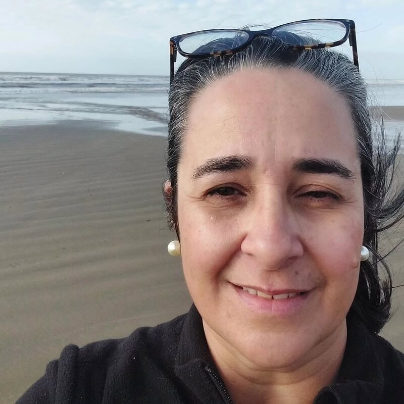

♡ In memoriamEm memóriaSandra Arnold Bandeira
A tribute to my sister, whose dedication, sensitivity and love of teaching keep inspiring this project.
Uma homenagem à minha irmã, cuja dedicação, sensibilidade e amor por ensinar continuam inspirando este projeto.
O SandraMine nasceu em um dos momentos mais difíceis da minha vida.
Entre idas e vindas ao hospital, lágrimas, preocupações e a esperança de ver minha irmã se recuperar, encontrei na programação uma maneira de ocupar a mente e direcionar meus pensamentos para algo diferente daquela realidade tão dolorosa.
Foi assim que, utilizando vibe coding, comecei a desenvolver o que inicialmente seria apenas uma experiência pessoal: um projeto para demonstrar, de forma visual e interativa, como funcionam o Bitcoin e a mineração.
Naquele momento, eu não imaginava que esse passatempo acabaria ganhando um significado tão profundo.
Minha irmã Sandra era uma mulher extraordinariamente dedicada. Mãe de três filhos, construiu sua vida com amor pela família, cuidado com as pessoas e uma sensibilidade especial para tudo aquilo que fazia.
Ela tinha um dom para a arte. Produzia artesanatos lindos, sempre com um cuidado impressionante pelos detalhes. Não se contentava em simplesmente fazer algo: colocava dedicação, capricho e um pouco de si em cada criação.
Mas havia outro talento que a tornava ainda mais especial: Sandra sabia ensinar.
Na igreja, dedicava seu tempo à educação das crianças, compartilhando conhecimentos com carinho, paciência e criatividade. Ela conseguia transformar o aprendizado em algo acolhedor e bonito.
Infelizmente, minha irmã faleceu, deixando uma saudade imensa em nossa família e em todos que tiveram o privilégio de conhecê-la.
Com sua partida, passei a olhar para este projeto de uma maneira diferente.
Percebi que, embora ela não tivesse qualquer relação com programação ou Bitcoin, existia algo muito especial que conectava o que eu estava construindo àquilo que ela fazia tão bem: o desejo de ensinar, utilizando a criatividade e a beleza como caminhos para o conhecimento.
Por isso, decidi dedicar este projeto à sua memória.
O SandraMine não nasceu com a ambição de minerar Bitcoin ou encontrar um bloco. Seu propósito é ajudar pessoas a compreender uma tecnologia que, à primeira vista, pode parecer complexa, transformando conceitos técnicos em experiências visuais, interativas e acessíveis.
Quero que cada detalhe deste projeto carregue um pouco do cuidado que Sandra colocava em suas criações e que cada pessoa que aprender algo aqui também conheça um pouco da história de quem inspirou esta homenagem.
É uma maneira simples, mas sincera, de manter viva sua memória.
Sandra, este projeto é para você.
Porque existem pessoas que continuam ensinando, mesmo depois de partir.
Com amor e saudade, seu irmão.
SandraMine was born in one of the hardest moments of my life.
Between trips back and forth to the hospital, tears, worries and the hope of seeing my sister recover, I found in programming a way to occupy my mind and turn my thoughts to something other than that painful reality.
That is how, using vibe coding, I began building what was at first just a personal experiment: a project to show, in a visual and interactive way, how Bitcoin and mining work.
At the time, I had no idea this pastime would come to carry such a deep meaning.
My sister Sandra was an extraordinarily dedicated woman. A mother of three, she built her life on love for her family, care for people and a special sensitivity for everything she did.
She had a gift for art. She made beautiful handicrafts, always with remarkable attention to detail. She was never content to simply make something: she put dedication, care and a little of herself into every creation.
But there was another gift that made her even more special: Sandra knew how to teach.
At church, she gave her time to teaching children, sharing what she knew with affection, patience and creativity. She could turn learning into something warm and beautiful.
Sadly, my sister passed away, leaving an immense longing in our family and in everyone who had the privilege of knowing her.
After she was gone, I began to see this project differently.
I realized that, although she had nothing to do with programming or Bitcoin, something very special connected what I was building to what she did so well: the wish to teach, using creativity and beauty as paths to knowledge.
That is why I decided to dedicate this project to her memory.
SandraMine was not born with the ambition of mining Bitcoin or finding a block. Its purpose is to help people understand a technology that may look complex at first sight, turning technical ideas into visual, interactive and accessible experiences.
I want every detail of this project to carry a little of the care Sandra put into her creations, and I want everyone who learns something here to also learn a little about the person who inspired this tribute.
It is a simple but sincere way of keeping her memory alive.
Sandra, this project is for you.
Because some people keep teaching, even after they are gone.
With love and longing, your brother.